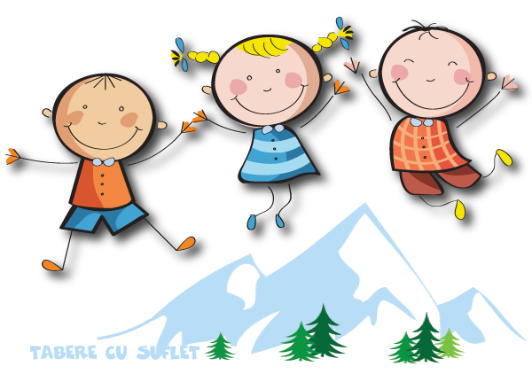

1. Conditii de Participare la Programele Asociatiei
Conform Statutului, obiectivul principal al Asociatiei Tabere cu Suflet, cu sediul in Bucuresti, str.Pictor Obedeanu, nr.18 sect 2 (denumita in continuare Asociatia ), este promovarea sportului in randul copiilor si adultilor, ca mijloc de recreere, pentru a asigura dezvoltarea armonioasa psiho-motorie a acestora, afirmarea pe plan sportiv si dezvoltarea simtului competitional.
Pentru indeplinirea acestui obiectiv, Asociatia organizeaza, fara a se limita la acestea, Tabere Sportive, activitati in cadrul programului Weekend Activ, Antrenamente sau Competitii, numite in continuare Programe.
Participarea la Programe este supusa unor conditii. Astfel, Participantul trebuie:
- sa isi exprime dorinta de a participa la Programul ales prin inscrierea in Formularul de Inscriere,
- sa furnizeze Asociatiei informatii corecte despre nume, varsta, nivel la activitatea la care urmeaza sa participe, preferinte meniu, alte probleme particulare, cu cel putin o saptamana inainte de inceperea Programului,
- sa se asigure, printr-un control medical de specialitate efectuat inaintea Programului, ca este apt din punct de vedere medical sa participe la Program si sa practice activitatile respective,
- in cazul in care sufera de o boala care poate afecta in orice masura participarea la program sau daca se afla sub tratament medicamentos, sa notifice imediat acest lucru Asociatiei,
- sa urmeze intocmai indrumarile primite de la instructorii Asociatiei si supraveghetorii grupului,
- sa arate diligenta in utilizarea materialelor si / sau animalelor puse la dispozitie de Asociatie pentru desfasurarea activitatilor specifice Programului si sa isi asume raspunderea pentru orice paguba,
- sa isi furnizeze sau sa inchirieze materialele necesare desfurarii activitatilor specifice Programului, iar in cazul in care se furnizeaza materiale proprii, acestea trebuie sa permita desfasurarea activitatilor specifice Programului,
- prin inscrierea la Program, sa isi exprime acordul ca Asociatia sa poata utiliza imagini foto / video cu el, din timpul Programului, pe siteul web propriu sau pe pagina sa, pentru promovarea Asociatiei si a Valorilor sale,
- sa isi exprime explicit consimtamantul ca datele sale personale sa fie prelucrate de Asociatie, conform Regulamentului Uniunii Europene 679 / 2016 (link) si Legii 677/2011 pentru protectia prelucrarii datelor cu caracter personal,
- sa aiba o atitudine favorabila, sa respecte Asociatia si insemnele acesteia, instructorii si pe ceilalti participanti,
- in cazul in care Participantul apeleaza la Programele sociale WeCare, sa completeze cu buna credinta formularul de inscriere, furnizand doar date si dovezi adevarate, si sa tina cont ca informatiile vor putea fi publicate,
- in cazul in care Participantul nu apeleaza la programele WeCare iar Activitatea aleasa are un cost, sa se informeze din timp asupra acestui cost si sa il suporte in intregime, respectand datele limita pentru plata,
- in cazul in care Participantul este retras inainte de inceperea taberei, sau in timpul taberei, din diferite motive ce nu tin de Asociatia Tabere cu Suflet (schimbare de program a copilului, imbolnavire etc), avansul nu se returneaza, cu exceptia conditiilor stipulate in art.5 al Contractului cadru
2. Informare privind Prelucararea Datelor cu caracter personal
Asociatia Tabere cu Suflet si TeamXpert sunt operatori de date personale, fiind inregistrate in Registrul de evidenta a prelucrarilor de date cu caracter personal cu nr. 19995. Asociatia Tabere cu Suflet poate culege si pastra date despre persoanele care, voluntar, furnizeaza aceste informatii, prin intermediul procedurii de inregistrare, conform Regulamentului Uniunii Europene 679 / 2016 (link).
CE DATE COLECTAM
Datele personale colectate de Asociatia Tabere cu Suflet, fara a se limita la acestea, sunt nume, prenume, varsta, sex participant, contactul persoanei de contact, nivel la activitatea sportiva pentru care se face inscrierea, eventuale probleme de sanatate care ar putea aparea in timpul taberei sau in timpul practicarii sportului respectiv, dimensiuni necesare pentru inchirierea echipamentului.
De asemenea, in cazul in care se apeleaza la programele de ajutor financiar, pot fi prelucrate urmatoarele date suplimentare: persoane care pot da referinte, motivul pentru care se apeleaza la programul WeCare.
Nu exista obligativitatea furnizarii de date personale. Totusi, exista o legătură directă și obiectivă între prelucrarea datelor și scopul executării contractului, in sensul ca in cazul in care nu sunt furnizate anumite date, exista posibilitatea sa nu putem organiza in deplina siguranta anumite activitati.
SCOPUL SI TEMEIUL LEGAL
Datele personale sunt prelucrate de Asociatie pentru a asigura buna desfasurare a activitatilor desfasurate si pentru a ne asigura ca persoanele vizate pot participa la programul ales, in conditii de siguranta.
Scopul prelucrarii datelor personale conform art. 6 din Regulamentul Uniunii Europene 679 / 2016 (link), este de:
- a asigura executarea unui contract la care persoana vizată este parte;
- a face demersuri la cererea persoanei vizate înainte de încheierea unui contract;
- în vederea îndeplinirii unor obligații legale care îi revin Asociatiei.
UTILIZAREA DATELOR PERSONALE
Conform art 5 din Regulamentul UE 679 / 2016, datele cu caracter personal colectate de Asociatie sunt:
- prelucrate într-un mod care asigură securitatea adecvată a datelor cu caracter personal, inclusiv protecția împotriva prelucrării neautorizate sau ilegale și împotriva pierderii, a distrugerii sau a deteriorării accidentale, prin luarea de măsuri tehnice sau organizatorice corespunzătoare („integritate și confidențialitate”);
- prelucrate în mod legal, echitabil și transparent față de persoana vizată („legalitate, echitate și transparență”);
- colectate în scopuri determinate, explicite și legitime și nu sunt prelucrate ulterior într-un mod incompatibil cu aceste scopuri;
- adecvate, relevante și limitate la ceea ce este necesar în raport cu scopurile în care sunt prelucrate („reducerea la minimum a datelor”).
Pentru acces la informatii in afara celor cu caracter public, oferite de site-ul www.taberecusuflet.ro, va obligati sa: furnizati date adevarate, exacte si complete despre dumneavoastra si / sau despre participantul la activitati, asa cum sunt cerute in formularul de inregistrare, si sa mentineti si innoiti, atunci cand este cazul, datele de inregistrare pentru a fi adevarate, exacte si complete.
Daca veti furniza informatii care nu sunt conforme cu realitatea, nu sunt exacte sau sunt incomplete, Asociatia Tabere cu Suflet poate sa anuleze, in orice moment, activitatea la care v-ati inregistrat, fara o compensare materiala.
CONSIMTAMANTUL PRIVIND COLECTAREA DATELOR PERSONALE
Datele cu caracter personal colectate de Asociatie sunt obtinute cu acordul persoanei vizate si sunt destinate exclusiv utilizarii de catre operatorul de date. Pentru a fi luat in considerare, consimtamantul persoanei vizate trebuie exprimat liber si explicit, conform art 7 (4) si 9 (2a) din Regulamentul UE 679 / 2016. Aceasta se poate face prin semnarea Contractului Cadru (Capitolul Date personale) (link), prin semnarea Fisei de Inscriere (link) sau prin completarea online a Formularului de Inscriere si bifarea casutei cu textul "Prin completarea acestui Formular imi exprim acordul explicit pentru prelucrarea datelor mele personale conform Regulamentului UE 679 / 2016". Casuta respectiva nu este setata in prealabil pentru un anumit raspuns, conform alin (32) din Regulamentul UE 679 / 2016.
Persoana vizată are dreptul să își retragă în orice moment consimțământul, conform art 7 (4) din Regulamentul UE 679 / 2016. Retragerea consimțământului nu afectează legalitatea prelucrării efectuate pe baza consimțământului înainte de retragerea acestuia. Înainte de acordarea consimțământului, persoana vizată este informata si are acces la aceasta informatie. Retragerea consimțământului se face printr-o cerere transmisa pe adresa Asociatia Tabere cu Suflet, str.Pictor Obedeanu, nr.18, sector 2, Bucuresti, sau pe adresa de email office@taberecusuflet.ro.
PERIOADA PRELUCRARII DATELOR PERSONALE
Datele personale sunt prelucrate pe tot parcursul relatiei contractuale si dupa finalizarea acesteia, cel putin pe perioada impusa de prevederile legale aplicabile in domeniu, inclusiv, dar fara limitare, la dispozitiile privind arhivarea.
DREPTURI LEGATE DE DATELE PERSONALE
Conform Legii nr. 677/2001, beneficiati de urmatoarele drepturi cu privire la datele cu caracter personal:
• Dreptul la informare – poate solicita informatii privind activitatile de prelucrare a datelor sale personale / ale Participantului/Participantilor;
• Dreptul la rectificare – pote rectifica datele personale inexacte sau le poate completa;
• Dreptul la stergerea datelor ("dreptul de a fi uitat") – poate obtine stergerea datelor, in cazul in care prelucrarea acestora nu a fost legala sau in alte cazuri prevazute de lege;
• Dreptul la restrictionarea prelucrarii - poate solicita restrictionarea prelucrarii in cazul in care contesta exactitatea datelor, precum si in alte cazuri prevazute de lege;
• Dreptul de opozitie – poate sa se opuna prelucrarii datelor sale;
• Dreptul la portabilitatea datelor - poate primi, in anumite conditii, datele personale pe care le-a furnizat sau poate solicita ca respectivele date sa fie transmise altui operator;
• Dreptul de a depune plangere - poate depune plangere fata de modalitatea de prelucrare a datelor personale la Autoritatea Nationala de Supraveghere a Prelucrarii Datelor cu Caracter Personal;
• Dreptul de retragere a consimtamantului – in cazurile in care prelucrarea se intemeiaza pe consimtamantul Sponsorului, il poate retrage oricand. Retragerea consimtamantului va avea efecte doar pentru viitor, prelucrarea efectuata anterior retragerii ramanand in continuare valabila.
Va puteti accesa foarte usor aceste drepturi, printr-o cerere transmisa pe adresa Asociatia Tabere cu Suflet, str.Pictor Obedeanu, nr.18, sector 2, Bucuresti, sau pe adresa de email office@taberecusuflet.ro.
PROTECTIA DATELOR CU CARACTER PERSONAL
Conform cerinţelor Legii nr. 677/2001 pentru protecţia persoanelor cu privire la prelucrarea datelor cu caracter personal şi libera circulaţie a acestor date, modificată şi completată şi ale Legii nr. 506/2004 privind prelucrarea datelor cu caracter personal şi protecţia vieţii private în sectorul comunicaţiilor electronice, Asociatia Tabere cu Suflet are obligaţia de a administra în condiţii de siguranţă şi numai pentru scopurile specificate, datele personale pe care ni le furnizaţi despre dumneavoastră, un membru al familiei dumneavoastră ori o altă persoană.
Datele se coleacteza printr-un serviciu de colectare (Google Forms) si sunt stocate in Uniunea Europeana, in regimuri de protectie adecvata. Datele sunt colectate intr-un fisier privat, operatorul fiind singurul care are acces asupra datelor personale colectate.
Datele personale colectate prin serviciul de colectare sunt sterse periodic, la un interval de cel mult 12 luni, de pe serverul serviciului de colectare, si stocate pe serverul Asociatiei, unde sunt pastrate atata timp cat persoana vizata este membra a Asociatiei, participa la activitatile Asociatiei sau a participat la activitatile Asociatiei si nu a facut o cerere de renuntare.
Pentru securitatea datelor personale, Asociatia ia toate masurile necesare, cum ar fi, fara a se limita la acestea: desemnarea unei persoane responsabile cu protectia datelor, crearea unui cod de conduita, utilizarea unui protocol securizat, pastrarea datelor intr-un container criptat.
COMUNICAREA DATELOR CATRE ALTI DESTINATARI
Pentru desfasurarea programelor Asociatiei Tabere cu Suflet, pentru indeplinirea obligatiilor legale ce revin Asociatiei sau in alte scopuri legitime, este posibil sa transmitem datele dvs personale catre autoritati publice, organe judiciare, imputerniciti catre care am externalizat furnizarea anumitor servicii si alte categorii de destinatari, cum ar fi: instructori pentru sporturile pe care le practica Participantii in cadrul Programului/Activitatii, unitati de cazare, furnizori de servicii de transport (exp: CFR, Deutsche Bahn, Tarom, Lufthansa, British Airways, Austrian Airlines, etc).
RESPONSABIL CU PROTECTIA DATELOR
Pentru securitatea datelor personale, Asociatia a desemnat o persoana responsabila cu protectia datelor. Pentru orice detalii legate de prelucrarea datelor persoanle, va rugam sa trimiteti o cerere la datele de contact ale Asociatiei sau sa il contactati pe dl. Radu Savin.
NEWSLETTER
La inscrierea la diferite servicii / programe, aveti posibilitatea sa alegeti daca doriti sau nu sa primiti Newsleterul Tabere cu Suflet care contine informatii despre activitatile desfasurate. De asemenea, aveti posibilitatea sa renuntati in orice moment sa mai primiti Newsletterul Tabere cu Suflet prin simpla apasare a butonului Dezabonare aflat in partea de jos a oricarui Newsletter, sau printr-o cerere transmisa pe adresa Asociatiei Tabere cu Suflet, str.Pictor Obedeanu, nr.18, sector 2, Bucuresti, sau pe adresa de email office@taberecusuflet.ro.
3. Conditii de utilizare
La accesarea, navigarea sau folosirea in orice alt mod a acestui site acceptati, fara limitari sau restrictii, termenii si conditiile de utilizare expuse in continuare. Acest site va fi folosit exclusiv pentru uzul dumneavoastra personal, noncomercial si cu conditia respectarii dreptului de proprietate intelectuala. Nu aveti dreptul sa modificati, schimbati, distribuiti, vindeti sau sa transmiteti nicio informatie continuta sau copiata de pe acest site, inclusiv dar fara a se limita la texte, imagini, grafica indiferent de scopul comercial sau public al unei asemenea activitati. Aceste reguli sunt obligatorii pentru toti utilizatorii site-ului, Asociatia Tabere cu Suflet garantand, in aceste conditii, un drept neexclusiv, netransferabil si limitat, de accesare si utilizare a acestui site.
MODIFICAREA ACESTOR TERMENI SI CONDITII DE UTILIZARE
Asociatia Tabere cu Suflet isi rezerva dreptul de a revizui acesti termeni si conditii de utilizare prin actualizarea acestei pagini in orice moment si fara o notificare prealabila a utilizatorilor. Termenii si conditiile de utilizare in vigoare sunt cei afisati pe site. Vizitarea periodica a acestei pagini va ofera posibilitatea de a lua la cunosnta de orice modificare survenita cu privire la acesti termeni si condittii, dumneavoastra fiind unicii raspunzatori de cunoasterea si conformarea la noile prevederi si modificari ce pot aparea.in caz de neconformare ne rezervam dreptul de a bloca accesul utilizatorilor care incalca acesti termeni si conditii de utilizare, sau orice alte prevederi relevante din legislatia in vigoare.
DREPT DE PROPRIETATE ASUPRA CONTINUTULUI ACESTUI SITE
Toate materialele reproduse pe acest site, incluzand, dar fara a se limita la informatii, texte, grafica, software, unelte, produse, servicii, date, rezultate ale folosirii software-ului, reclame, nume, logo-uri precum si marci inregistrate reprezinta "continutul" acestui site fiind protejate de legea dreptului de autor, legile referitoare la marci si proprietate intelectuala, cu exceptia unei stipulatii exprese contrare existente pe acest site. Folosirea de catre dumneavoastra a continutului site-ului constituie o acceptare a acestor conditii si va obliga la respectarea acestora. Este interzisa modificarea, copierea, reproducerea, descarcarea, transmiterea sau distribuirea acestui continut in orice modalitate cu exceptia cazurilor permise de conditiile de utilizare sau cu consimtamantul expres si prealabil al proprietarului acestui continut.
MARCI INREGISTRATE SI COPYRIGHT
Marcile inregistrate si logo-ul de pe acest site si alte site-uri afiliate, sunt, sub rezerva unei stipulatii contrare exprese, proprietatea Asociatia Tabere cu Suflet. Ele sunt protejate de catre Legea Marcilor inregistrate si de catre tratate internationale, iar reproducerea si folosirea lor neautorizata vor atrage dupa sine pedepsirea conform legilor in vigoare. Toate drepturile sunt rezervate. Legea dreptului de autor si tratatele internationale protejeaza acest site. Nimic din acest site ori din site-urile afiliate nu poate fi reprodus sub nicio forma si in niciun fel fara o permisiune in prealabil scrisa de la Asociatia Tabere cu Suflet. Reproducerea neautorizata a acestui site si a celor afiliate, ori a oricarei parti componente va atrage dupa sine pedepsirea conform legislatiei in vigoare.
DISCULPARE DE GARANTIE
Asociatia Tabere cu Suflet a realizat acest site ca un serviciu cu scop exclusiv informativ. Transmiterea acestor informatii nu creeaza nici un fel de relatie contractuala cu Asociatia Tabere cu Suflet. Nu trebuie sa actionati in temeiul informatiilor oferite de acest site fara a cere asistenta specializata de la Asociatia Tabere cu Suflet. Desi Asociatia Tabere cu Suflet a incercat sa mentina informatiile, software-ul si alte servicii cat mai curate, acest site poate contine erori si omisiuni pentru care nu ne asumam nici o responsabilitate. Materialele si continuturile de pe acest site sunt furnizate fara nici un fel de garantie. Asociatia Tabere cu Suflet nu este responsabil pentru nici o pierdere de tip hardware, software sau de fisiere, cauzate de folosirea site-ului. Prin urmare, Asociatia Tabere cu Suflet nu ofera nici o garantie ca site-ul, produsele sau serviciile furnizate pe site, de catre Asociatia Tabere cu Suflet sau in numele companiei Asociatia Tabere cu Suflet vor indeplini cerintele dumneavoastra, nu vor fi intrerupte, vor fi sigure, fara erori sau ca site-ul sau serverele folosite de Asociatia Tabere cu Suflet nu au virusuri si sunt pe deplin functionale sau curate.
4. Informare privind uitlizarea Cookie-urilor
Informatiile prezentate in continuare au scopul de a indeplini cerintele Directivei 2009/136/EC din 25.11.2009 a Parlamentului European privind drepturile utilizatorilor cu privire la serviciile de comunicatii electronice, prin aducerea la cunostinta utilizatorilor a informatiilor despre plasarea, utilizarea si administrarea "cookie"-urilor utilizate de siteul www.taberecusuflet.ro, numit in continuare Site.
Siteul nu foloseste cookie-uri proprii.
Site-ul utilizeaza cookie-uri pentru analiza vizitatorilor (furnizate de Google Analytics si StatCounter) si pentru social media (furnizate de Facebook).
Siteul utilizeaza cookie-uri de la terti pentru a putea furniza vizitatorilor o experienta de navigare de calitate si pentru a se ridica la nivelul cerintelor fiecarui utilizator in parte. Din pacate nu s-a inventat inca o alta tehnologie care sa indeplineasca aceste obiective fara utilizarea cookie-urilor!
"Cookie"-urile joaca un rol important in facilitarea accesului si livrarii multiplelor servicii de care utilizatorul se bucura pe internet, cum ar fi:
. Personalizarea anumitor setari precum: limba in care este vizualizat un site, moneda in care se exprima anumite preturi sau tarife, pastrarea optiunilor pentru diverse produse (masuri, alte detalii etc) in cosul de cumparaturi (si memorarea acestor optiuni) - generandu-se astfel flexibilitatea "cosului de cumparaturi" (accesarea preferintelor vechi prin accesarea butonului "inainte" si "inapoi")
. Cookie-urile ofera detinatorilor de site-uri un feedback valoros asupra modului cum sunt utilizate site-urile lor de catre utilizatori, astfel incat sa le poata face si mai eficiente si mai accesibile pentru utilizatori.
. Permit aplicatiilor multimedia sau de alt tip de pe alte site-uri sa fie incluse intr-un anumit site pentru a crea o experienta de navigare mai valoroasa, mai utila si mai placuta;
. Imbunatatesc eficienta publicitatii online.
Ce este un "cookie"?
Un "Internet Cookie" (termen cunoscut si ca "browser cookie" sau "HTTP cookie" sau pur si simplu"cookie" ) este un fisier de mici dimensiuni, format din litere si numere, care va fi stocat pe computerul, terminalul mobil sau alte echipamente ale unui utilizator de pe care se acceseaza Internetul.
Cookie-ul este instalat prin solicitara emisa de catre un web-server unui browser (ex: Internet Explorer, Chrome) si este complet "pasiv" (nu contine programe software, virusi sau spyware si nu poate accesa informatiile de pe hard driveul utilizatorului).
Un cookie este format din 2 parti: numele si continutul sau valoarea cookie-ului. Mai mult, durata de existenta a unui cookie este determinata; tehnic, doar webserverul care a trimis cookie-ul il poate accesa din nou in momentul in care un utilizator se intoarce pe website-ul asociat webserverului respectiv.
Cookie-urile in sine nu solicita informatii cu caracter personal pentru a putea fi utilizate si, in cele maimulte cazuri, nu identifica personal utilizatorii de internet.
Exista 2 categorii mari de cookie-uri:
. Cookieuri de sesiune - acestea sunt stocate temporar in dosarul de cookie-uri al browserului web pentru ca acesta sa le memoreze pana cand utilizatorul iese de pe web-siteul respectiv sau inchide fereastra browserului ( ex: in momentul logarii/delogarii pe un cont de webmail sau pe retele de socializare).
. Cookieuri Persistente - Acestea sunt stocate pe hard-drive-ul unui computer sau echipament (si in general depinde de durata de viata prestabilita pentru cookie). Cookie-urile persistente le includ si pe cele plasate de un alt website decat cel pe care il viziteaza utilizatorul la momentul respectiv - cunoscute sub numele de 'third party cookies' (cookieuri plasate de terti) - care pot fi folosite in mod anonim pentru a memora interesele unui utilizator, astfel incat sa fie livrata publicitate cat mai relevanta pentru utilizatori.
Care sunt avantajele cookie-urilor?
Un cookie contine informatii care fac legatura intre un web-browser (utilizatorul) si un web-server anume (website-ul). Daca un browser acceseaza acel web-server din nou, acesta poate citi informatia deja stocata si reactiona in consecinta. Cookie-urile asigura userilor o experienta placuta de navigare si sustin eforturile multor websiteuri pentru a oferi servicii confortabile utilizatorillor: ex - preferintele in materie de confidentialitate online, optiunile privind limba site-ului, cosuri de cumparaturi sau publicitate relevanta.
Care este durata de viata a unui cookie?
Cookieurile sunt administrate de webservere. Durata de viata a unui cookie poate varia semnificativ, depinzand de scopul pentru care este plasat. Unele cookie-uri sunt folosite exclusive pentru o singura sesiune (session cookies) si nu mai sunt retinute odata de utilizatorul a parasite website-ul si unele cookie-uri sunt retinute si refolosite de fiecare data cand utilizatorul revine pe acel website ('cookie-uri permanente'). Cu toate aceste, cookie-urile pot fi sterse de un utilizator in orice moment prin intermediul setarilor browserului.
Ce sunt cookie-urile plasate de terti?
Anumite sectiuni de continut de pe unele site-uri pot fi furnizate prin intermediul unor terte parti/furnizori (ex: news box, un video sau o reclama). Aceste terte parti pot plasa de asemenea cookieuri prin intermediul site-ului si ele se numesc "third party cookies" pentru ca nu sunt plasate de proprietarul website-ului respectiv. Furnizorii terti trebuie sa respecte de asemenea legea in vigoare si politicile de confidentialitate ale detinatorului site-ului.
Exemple de cookie-uri
• Cookie-uri de performanta a site-ului
• Cookie-uri de analiza a vizitatorilor
• Cookie-uri pentru geotargetting
• Cookie-uri de inregistrare
• Cookie-uri pentru publicitate
• Cookie-uri ale furnizorilor de publicitate
Cookie-uri de performanta
Acest tip de cookie retine preferintele utilizatorului pe acest site, asa incat nu mai este nevoie de setarea lor la fiecare vizitare a site-ului.
Exemple:
- setarile volumului pentru video player
- viteza de video streaming cu care este compatibil browserul
Cookie-uri pentru analiza vizitatorilor
De fiecare data cand un utilizator viziteaza acest site softul de analytics furnizat de o terta parte genereaza un cookie de analiza a utilizatorului. Acest cookie ne spune daca ati mai vizitat acest site pana acum. Browserul ne va spune daca aveti acest cookie, iar daca nu, vom genera unul. Acesta permite monitorizarea utilizatorilor unici care ne viziteaza si cat de des o fac.
Atat timp cat nu sunteti inregistrat pe acest site, acest cookie nu poate fi folosit pentru a identifica persoanele fizice, ele sunt folosite doar in scop statistic. Daca sunteti inregistrat putem sti, de asemenea, detaliile pe care ni le-ati furnizat, cum ar fi adresa de e-mail si username-ul - acestea fiind supuse confidentialitatii si prevederilor din Termeni si Conditii, Politica de confidentialitate precum si prevederilor legislatiei in vigoare cu privire la protejarea datelor cu caracter personal.
Cookie-uri pentru geotargetting
Aceste cookie-uri sunt utilizate de catre un soft care stabileste din ce tara proveniti. Este complet anonim si este folosit doar pentru a targeta continutul - chiar si atunci cand sunteti pe pagina noastra in limba romana sau in alta limba primiti aceeasi reclama.
Cookie-uri pentru inregistrare
Atunci cand va inregistrati pe acest site, generam un cookie care ne anunta daca sunteti inregistrat sau nu. Serverele noastre folosesc aceste cookie-uri pentru a ne arata contul cu care sunteti ingregistrat si daca aveti permisiunea pentru un serviciu anume. De asemenea, ne permite sa asociem orice comentariu pe care il postati pe site-ul nostru cu username-ul dvs. Daca nu ati selectat "pastreaza-ma inregistrat", acest cookie se va sterge automat cand veti inchide browserul sau calculatorul.
Cookie-uri pentru publicitate
Aceste cookie-uri ne permit sa aflam daca ati vizualizat sau nu o reclama online, care este tipul acesteia si cat timp a trecut de cand ati vazut mesajul publicitar.
Aceste cookie-uri le folosim si pentru a targeta publicitatea online. Putem folosi, de asemenea, cookieuri apartinand unei terte parti, pentu o mai buna targetare a publicitatii, pentru a arata de exemplu reclame despre vacante, daca utilizatorul a vizitat recent un articol pe site despre vacante. Aceste cookie-uri sunt anonime, ele stocheaza informatii despre contentul vizualizat, nu despre utilizatori.
De asemenea, setam cookie-uri anonime si prin alte site-uri pe care avem publicitate. Primindu-le, astfel, noi le putem folosi pentru a va recunoaste ca vizitator al acelui site daca ulterior veti vizita site-ul nostru, va vom putea livra publicitatea bazata pe aceasta informatie.
Cookie-uri ale furnizorilor de publicitate
O mare parte din publicitatea pe care o gasiti pe siteuri apartine tertelor parti. Unele dintre aceste parti folosesc propriile cookie-uri anonime pentru a analiza cat de multe persoane au fost expuse unui mesaj publicitar, sau pentru a vedea cate persoane au fost expuse de mai multe ori la aceeasi reclama.
Companiile care genereaza aceste cookie-uri au propriile politici de confidentialitate, iar acest site nu are acces pentru a citi sau scrie aceste cookie-uri. Cookie-urile celor terte parti pot fi folosite pentru a va arata publicitatea targeta si pe alte site-uri, bazandu-se pe navigarea dvs pe acest site.
Alte cookie-uri ale tertelor parti
Pe unele pagini, tertii pot seta propriile cookie-uri anonime, in scopul de a urmari succesul unei aplicatii sau pentru a customiza o aplicatie. Datorita modului de utilizare, acest site nu poate accesa aceste cookie-uri, la fel cum tertele parti nu pot accesa cookie-urile detinute de acest site.
De exemplu, cand distribuiti un articol folosind butonul pentru retelele sociale aflat pe acest site, acea retea sociala va inregistra activitatea dvs.
Ce tip de informatii sunt stocate si accesate prin intermediul cookie-urilor?
Cookie-urile pastreaza informatii intr-un fisier text de mici dimensiuni care permit unui website sa recunoasca un browser. Webserverul va recunoaste browserul pana cand cookie-ul expira sau este sters.
Cookie-ul stocheaza informatii importante care imbunatatesc experienta de navigare pe Internet ( ex: setarile limbii in care se doreste accesarea unui site; pastrarea unui user logat in contul de webmail; securitatea online banking; pastrarea produselor in cosul de cumparaturi)
De ce sunt cookie-urile importante pentru Internet?
Cookie-urile reprezinta punctul central al functionarii eficiente a Internetului, ajutand la generarea unei experiente de navigare prietenoase si adaptata preferintelor si intereselor fiecarui utilizator. Refuzarea sau dezactivarea cookieurilor poate face unele site-uri imposibil de folosit.
Refuzarea sau dezactivarea cookie-urilor nu inseamna ca nu veti mai primi publicitate online - ci doar ca aceasta nu va mai putea tine cont de preferintele si interesele dvs, evidentiate prin comportamentul de navigare.
Exemple de intrebuintari importante ale cookieurilor ( care nu necesita autentificarea unui utilizator prin intermediul unui cont):
- Continut si servicii adaptate preferintelor utilizatorului - categorii de stiri, vreme, sport, harti, servicii publice si guvernamentale, site-uri de entertainment si servicii de travel.
- Oferte adaptate pe interesele utilizatorilor - retinerea parolelor, preferintele de limba ( Ex: afisarea rezultatelor cautarilor in limba Romana).
- Retinerea filtrelor de protectie a copiilor privind continutul pe Internet (optiuni family mode, functii de safe search).
- Limitarea frecventei de difuzare a reclamelor - limitarea numarului de afisari a unei reclame pentru un anumit utilizator pe un site.
- Furnizarea de publicitate mai relevanta pentru utilizator.
- Masurarea, optimizare si caracteristicile de analytics - cum ar fi confirmarea unui anumit nivel de trafic pe un website, ce tip de continut este vizualizat si modul cum un utilizator ajunge pe un website (ex prin motoare de cautare, direct, din alte website-uri etc). Website-urile deruleaza aceste analize a utilizarii lor pentru a imbunatati site-urile in beneficiul userilor.
Securitate si probleme legate de confidentialitate
Cookieurile NU sunt virusi! Ele folosesc formate tip plain text. Nu sunt alcatuite din bucati de cod asa ca nu pot fi executate nici nu pot auto-rula. In consecinta, nu se pot duplica sau replica pe alte retele pentru a se rula sau replica din nou. Deoarece nu pot indeplini aceste functii, nu pot fi considerate virusi.
Cookie-urile pot fi totusi folosite pentru scopuri negative. Deoarece stocheaza informatii despre preferintele si istoricul de navigare al utilizatorilor, atat pe un anume site cat si pe mai multe alte siteuri, cookieurile pot fi folosite ca o forma de Spyware. Multe produse anti-spyware sunt constiente de acest fapt si in mod constant marcheaza cookie-urile pentru a fi sterse in cadrul procedurilor de stergere/scanare anti-virus/anti-spyware.
In general browserele au integrate setari de confidentialitate care furnizeaza diferite nivele de acceptare a cookieurilor, perioada de valabilitate si stergere automata dupa ce utilizatorul a vizitat un anumit site.
Alte aspecte de securitate legate de cookie-uri:
Deoarece protectia identitatii este foarte valoroasa si reprezinta dreptul fiecarui utilizator de internet, este indicat sa se stie ce eventuale probleme pot crea cookieurile. Pentru ca prin intermediul lor se transmit in mod constant in ambele sensuri informatii intre browser si website, daca un atacator sau persoana neautorizata intervine in parcursul de transmitere a datelor, informatiile continute de cookie pot fi interceptate.
Desi foarte rar, acest lucru se poate intampla daca browserul se conecteaza la server folosind o retea necriptata (ex: o retea WiFi nesecurizata).
Alte atacuri bazate pe cookie implica setari gresite ale cookieurilor pe servere. Daca un website nu solicita browserului sa foloseasca doar canale criptate, atacatorii pot folosi aceasta vulnerabilitate pentru a pacali browserele in a trimite informatii prin intermediul canalelor nesecurizate. Atacatorii utilizeaza apoi informatiile in scopuri de a accesa neautorizat anumite site-uri. Este foarte important sa fiti atenti in alegerea metodei celei mai potrivite de protectie a informatiilor personale.
Sfaturi pentru o navigare sigura si responsabila, bazata pe cookies
Datorita flexibilitatii lor si a faptului ca majoritatea dintre cele mai vizitate site-uri si cele mai mari folosesc cookieuri, acestea sunt aproape inevitabile. Dezactivarea cookie-urilor nu va permite accesul utilizatorului pe site-urile cele mai raspandite si utilizate printre care Youtube, Gmail, Yahoo si altele.
Iata cateva sfaturi care va pot asigura ca navigati fara griji insa cu ajutorul cookieurilor:
. Particularizati-va setarile browserului in ceea ce priveste cookie-urile pentru a reflecta un nivel confortabil pentru voi al securitatii utilizarii cookie-urilor.
. Daca nu va deranjeaza cookie-urile si sunteti singura persoana care utilizaeaza computerul, puteti seta termene lungi de expirare pentru stocarea istoricului de navigare si al datelor personale de acces.
. Daca impartiti accesul la calculator, puteti lua in considerare setarea browserului pentru a sterge datele individuale de navigare de fiecare data cand inchideti browserul. Aceasta este o varianta de a accesa site-urile care plaseaza cookieuri si de a sterge orice informatie de vizitare la inchiderea sesiunii navigare.
. Instalati-va si updatati-va constant aplicatii antispyware.
Multe dintre aplicatiile de detectare si prevenire a spyware-ului includ detectarea atacurilor pe site-uri. Astfel, impiedica browserul de la a accesa website-uri care ar putea sa exploateze vulnerabilitatilebrowserului sau sa descarce software periculos.
Asigurati-va ca aveti browserul mereu updatat.
Multe dintre atacurile bazate pe cookies se realizeaza exploatand punctele slabe ale versiunilor vechi ale browserelor.
Cookie-urile sunt pretutindeni si nu pot fi evitate daca doriti sa va bucurati de acces pe cele mai bune si cele mai mari site-uri de pe Internet - locale sau internationale. Cu o intelegere clara a modului lor de operare si a beneficiilor pe care le aduc, puteti lua masurile necesare de securitate astel incat sa puteti naviga cu incredere pe internet.
Cum pot opri cookie-urile?
Dezactivarea si refuzul de a primi cookie-uri pot face anumite site-uri impracticabile sau dificil de vizitat si folosit. De asemenea, refuzul de a accepta cookie-uri nu inseamna ca nu veti mai primi/vedea publicitate online.
Este posibila setarea din browser pentru ca aceste cookie-uri sa nu mai fie acceptate sau poti seta browserul sa accepte cookie-uri de la un site anume. Dar, de exemplu, daca nu esti inregistat folosind cookie-urile, nu vei putea lasa comentarii.
Toate browserele moderne ofera posibilitatea de a schimba setarile cookie-urilor. Aceste setari se gasesc de regula in "optiuni" sau in meniul de "preferinte" al browserului.
In cazul in care aveti nevoie de mai multe informatii si ele nu se regasesc pe aceasta pagina, ne puteti contacta la office@taberecusuflet.ro.